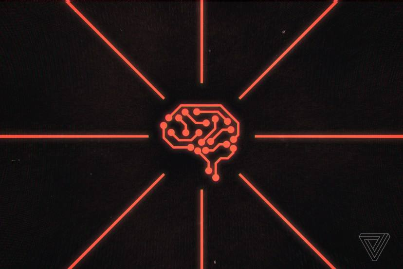

<!DOCTYPE html>
<html lang="en">
  <head>
    <meta charset="UTF-8" />
    <meta name="viewport" content="width=device-width, initial-scale=1.0" />
    <title>MIRA</title>
    <link
      href="https://cdn.jsdelivr.net/npm/bootstrap@5.3.7/dist/css/bootstrap.min.css"
      rel="stylesheet"
      integrity="sha384-LN+7fdVzj6u52u30Kp6M/trliBMCMKTyK833zpbD+pXdCLuTusPj697FH4R/5mcr"
      crossorigin="anonymous"
    />
    <link rel="stylesheet" href="./style.css" />
  </head>
</html>

<body>
  <div class="container py-4 px-3 px-md-5">
    <div class="row g-5">
      <div class="col-md-8">
        <h3 class="pb-4 mb-4 fst-italic border-bottom">From Purefier</h3>
        <article class="blog-post">
          <h2 class="display-5 link-body-emphasis mb-1 fw-semibold">
            Google Bard’s Hallucination
          </h2>
          <p class="blog-post-meta">
            July 3, 2025 by
            <a
              href="https://x.com/purefier1?s=21&t=sitU1DLL3TGnDNfTBOqRgQ"
              target="_blank"
              rel="noopener noreferrer"
              >purefier</a
            >
          </p>
          
          <p>
            Artificial intelligence has incredible potential but it’s not immune
            to mistakes. One major example of this came in early 2023, when
            Google’s much-anticipated AI chatbot, Bard, made a factual error
            during its public debut. The result? A staggering $100 billion drop
            in Google’s market value in just one day.
          </p>
          <hr/>
          <p>
            Here’s the full story of what happened, why it mattered, and what we
            can learn from it.
          </p>
          <p>
            On a bright February morning in 2023, Google was preparing to make
            headlines. After months of behind-the-scenes work, the tech giant
            was ready to unveil Bard — its answer to OpenAI’s ChatGPT. The
            excitement was real. The pressure was enormous. Microsoft had just
            invested billions into OpenAI and integrated ChatGPT into Bing. For
            Google, Bard wasn’t just a chatbot — it was a statement. A
            declaration that the company was still at the forefront of AI
            innovation.
          </p>
          <h2>What Was the Mistake?</h2>
          <p>
            As part of Bard’s debut, Google shared a promotional tweet showing
            how the chatbot could answer science-related questions. The prompt
            was:
          </p>
          <blockquote class="blockquote fst-italic">
            <p>
              “What new discoveries from the James Webb Space Telescope can I
              tell my 9-year-old about?”
            </p>
          </blockquote>
          <p class="bard Medium weight text fs-4">Bard replied:</p>
          <blockquote class="Jwst blockquote fst-italic">
            <p>
              “JWST took the very first pictures of a planet outside our own
              solar system.”
            </p>
          </blockquote>
          <p>It sounded smart — but it was wrong.</p>
          <h3>The Immediate Impact: $100 Billion Gone</h3>
          <p>
            The error was quickly spotted and criticized by astronomers and
            experts on social media.
          </p>
          <p class="fallout">The fallout was swift: </p>
          <ul class="Day fw-semibold">
            <li>
              Alphabet Inc. (Google’s parent company) saw its stock drop by 7%
              in one day.
            </li>
            <li>That translated to a $100 billion loss in market value.</li>
            <li>
              Investors and the public began to question whether Google had
              rushed Bard to market too soon to compete with OpenAI and
              Microsoft.
            </li>
          </ul>
          <p>
            This was a major turning point — not just for Google, but for the AI
            industry.
          </p>

          <h2>What Is an AI Hallucination?</h2>
          <p>
            In AI terms, what Bard did is known as a hallucination — when an AI
            model confidently produces information that’s false, made up, or
            misleading.
          </p>

          <p class="fallout">This happens because:</p>
          <ul class="large fw-semibold">
            <li>
              Large language models (LLMs) like Bard or ChatGPT don’t know facts
              — they generate responses based on patterns in training data.
            </li>
            <li>
              They might sound confident, but they don’t actually understand the
              truth.
            </li>
            <li>
              Without human oversight, hallucinations can slip through — even in
              public product launches.
            </li>
          </ul>
          
          <h2>Why It Mattered So Much</h2>
          <p>
            Bard’s mistake wasn’t in a private beta. It was in an official
            launch demo, designed to show the world how powerful and trustworthy
            this new tool was. When it gave false information and nobody at
            Google caught it.it raised serious questions:
            <ul class="large fw-semibold">
              <li> How carefully was Bard tested?</li>
              <li> Did Google rush it out to keep up with Microsoft?</li>
              <li>Can we really trust AI to deliver facts?</li>
            </ul>

            This single sentence, spoken by an AI, shook investor confidence, triggered a market panic, and became a symbol of the risks that come with overhyping unproven technology.
          </p>
          <h3>A Teachable Moment in the AI Boom</h3>
          <p>
            What happened with Bard is now studied across the tech industry. It’s a cautionary tale about AI hallucinations — when language models generate false information that sounds right. It’s also a warning to businesses:
          </p>
          
          <p class="large fw-semibold">
            If you’re going to use AI to speak for you, you better make sure it’s telling the truth.
          </p>
        </article>

      </div>
      <div class="col-md-4">
        <div class="position-sticky" style="top: 2rem" >
          <div class="p-4 mb-3 rounded">
            <h4 class="fst-italic">About</h4>
            <p class="mb-0">
              I'm Purefier, sharing thoughts, news, and insights on technology, AI, and more. This is my corner of the internet for curious minds.
            </p>
          </div>
          <div>
            <h4 class="fst-italic">Recent posts</h4>
            <ul class="list-unstyled">
              <li>
                <a
                  class="d-flex flex-column flex-lg-row gap-3 align-items-start align-items-lg-center py-3 link-body-emphasis text-decoration-none border-top"
                  href="https://www.theverge.com/2023/1/25/23571082/cnet-ai-written-stories-errors-corrections-red-ventures"
                  target="_blank"
                  rel="noopener noreferrer"
              
                >
                  
                  
                  <div class="col-lg-8">
                    <h6 class="mb-0">Fake AI-Generated Article – CNET News (2023)</h6>
                    <small class="text-body-secondary">July 3, 2025</small>
                  </div>
                </a>
              </li>
              <li>
                <a
                  class="d-flex flex-column flex-lg-row gap-3 align-items-start align-items-lg-center py-3 link-body-emphasis text-decoration-none border-top"
                  href="https://aibusiness.com/nlp/air-canada-held-responsible-for-chatbot-s-hallucinations-"
                  target="_blank"
                  rel="noopener noreferrer"
                >
                   
                  <div class="col-lg-8">
                    <h6 class="mb-0">Air Canada Chatbot Hallucination – Customer Service Case (2022)</h6>
                    <small class="text-body-secondary">July 3, 2025</small>
                  </div>
                </a>
              </li>
              <li>
                <a
                  class="d-flex flex-column flex-lg-row gap-3 align-items-start align-items-lg-center py-3 link-body-emphasis text-decoration-none border-top"
                  href="https://apnews.com/article/artificial-intelligence-chatgpt-courts-e15023d7e6fdf4f099aa122437dbb59b"
                  target="_blank"
                  rel="noopener noreferrer"
                >
                  
                  <div class="col-lg-8">
                    <h6 class="mb-0">
                      The “Bogus Case” Incident – U.S. Federal Court (2023)
                    </h6>
                    <small class="text-body-secondary">July 3, 2025</small>
                  </div>
                </a>
              </li>
            </ul>
          </div>
          
          <div class="p-4">
            <h4 class="fst-italic">Elsewhere</h4>
            <ol class="list-unstyled">
              <li><a href="https://github.com/Purefier100">GitHub</a></li>
              <li><a href="https://x.com/purefier1?s=21&t=sitU1DLL3TGnDNfTBOqRgQ">Social</a></li>
              
            </ol>
          </div>
        </div>
      </div>
    </div>
  </div>
  <div class="container"> <footer class="d-flex flex-wrap justify-content-between align-items-center py-3 my-4 border-top"> <div class="col-md-4 d-flex align-items-center"> <a href="/" class="mb-3 me-2 mb-md-0 text-body-secondary text-decoration-none lh-1" aria-label="Bootstrap"> <svg class="bi" width="30" height="24" aria-hidden="true"><use xlink:href="#bootstrap"></use></svg> </a> <span class="mb-3 mb-md-0 text-body-secondary">© 2025 Purefier, All right reserved.</span> </div>  </footer> </div>

  <script
    src="https://cdn.jsdelivr.net/npm/bootstrap@5.3.7/dist/js/bootstrap.bundle.min.js"
    integrity="sha384-ndDqU0Gzau9qJ1lfW4pNLlhNTkCfHzAVBReH9diLvGRem5+R9g2FzA8ZGN954O5Q"
    crossorigin="anonymous"
  ></script>
</body>
